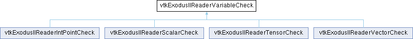

|
Etrek
|
|
Etrek
|
Abstract base class for glomming arrays of variable names. More...
#include <vtkExodusIIReaderVariableCheck.h>

Public Member Functions | |
| virtual bool | Start (std::string name, const int *truth, int numTruth) |
| Initialize a sequence of names. Returns true if any more names are acceptable. | |
| virtual bool | StartInternal (std::string name, const int *truth, int numTruth)=0 |
| Subclasses implement this and returns true if any more names are acceptable. | |
| virtual bool | Add (std::string name, const int *truth)=0 |
| Add a name to the sequence. Returns true if any more names may be added. | |
| virtual std::vector< std::string >::size_type | Length () |
| Returns the length of the sequence (or 0 if the match is incorrect or incomplete). | |
| virtual int | Accept (std::vector< vtkExodusIIReaderPrivate::ArrayInfoType > &arr, int startIndex, vtkExodusIIReaderPrivate *priv, int objtyp) |
| Accept this sequence. (Add an entry to the end of arr.) Must return Length(). | |
Protected Member Functions | |
| bool | CheckTruth (const int *truth) |
| bool | UniquifyName (vtkExodusIIReaderPrivate::ArrayInfoType &ainfo, std::vector< vtkExodusIIReaderPrivate::ArrayInfoType > &arrays) |
Protected Attributes | |
| int | GlomType |
| std::vector< int > | SeqTruth |
| std::string | Prefix |
| std::vector< std::string > | OriginalNames |
Abstract base class for glomming arrays of variable names.
Subclasses check whether variable names listed in an array of names are related to each other (and should thus be glommed into a single VTK array).
|
pure virtual |
Add a name to the sequence. Returns true if any more names may be added.
Implemented in vtkExodusIIReaderIntPointCheck, vtkExodusIIReaderScalarCheck, vtkExodusIIReaderTensorCheck, and vtkExodusIIReaderVectorCheck.
|
protected |
Utility that subclasses may call from within Add() to verify that the new variable is defined on the same objects as other variables in the sequence.
|
virtual |
Returns the length of the sequence (or 0 if the match is incorrect or incomplete).
Reimplemented in vtkExodusIIReaderIntPointCheck, vtkExodusIIReaderTensorCheck, and vtkExodusIIReaderVectorCheck.
|
pure virtual |
Subclasses implement this and returns true if any more names are acceptable.
Implemented in vtkExodusIIReaderIntPointCheck, vtkExodusIIReaderScalarCheck, vtkExodusIIReaderTensorCheck, and vtkExodusIIReaderVectorCheck.